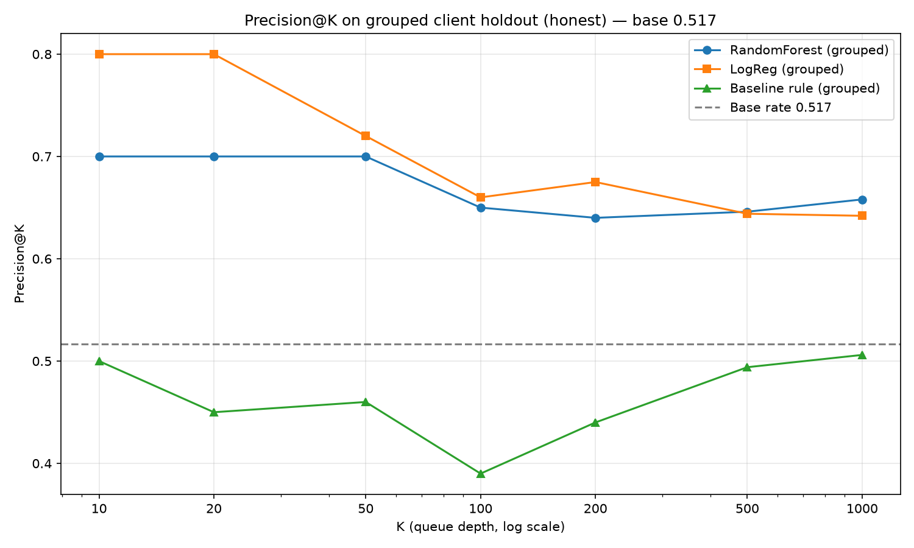
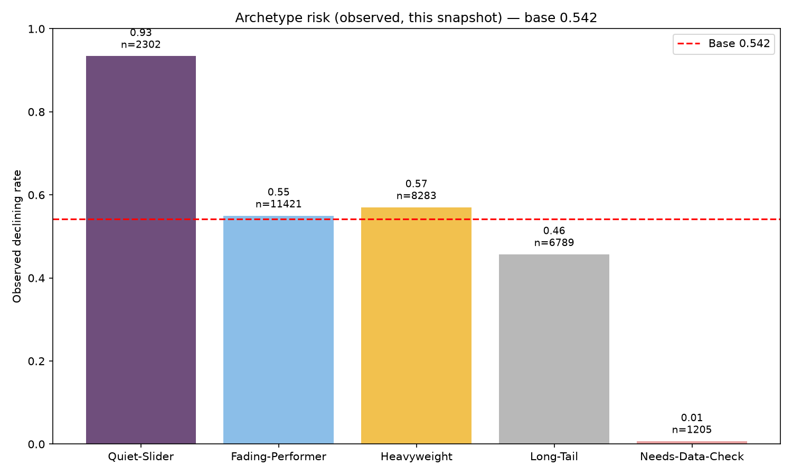

1. Introduction & Problem Statement
Content that ranks in Google Search quietly decays — impressions slip, clicks drop, most teams notice too late. The valuable decision is not "will this page decline?" in the abstract, but "which 50 pages should an editor review this week?"
The scenario
An editorial team can realistically review ~50 pages/week. They open a queue, see each page's reason code (why it was flagged), check position and denominator, then decide Refresh / Investigate / Strategic review / Monitor. Without a queue, they guess.
Unit of analysis: one content item per client (content_id). Output: a priority score that sorts. IDs are pseudonyms — grouping only, never features.
Why a rule isn't enough
FlyRank already flags with hand-written rules (health scores, "needs attention"). Rules work but run out where signals are many, tangled and shifting — staleness × visibility × CTR × position interact non-monotonically. A learned ranker that weights many signals together beats a fixed if stale and moderate then ….
Product flags are outputs to beat, never inputs — otherwise the model learns the flag, not the world.
2. Data
Release: Starter slice shipped in this repo — data/raw/content_refresh_anonymized.csv, 30,000 rows × 44 columns, one row per pseudonymized content item, 32 clients, trailing-90-day GSC/GA4 aggregates plus content metadata and derived 30-day comparison windows. This is the teaching slice of the warehouse release hf://datasets/FlyRank/internship-warehouse (build v20260703, 2025-01-27 → 2026-06-30, ~79M daily rows). The paper's numbers are from the starter slice; a mid-month warehouse window (2026-03, feature 03-01→03-15, label 03-16→03-31) was audited for leakage and time design in work/notebooks/w03_data_contract.ipynb.
Time windows
Single snapshot — no calendar report_date here, so the honest dimension is client, not time. Label is trend_direction == "down" where down is trend_pct < −20% on impressions_last_30d vs impressions_prev_30d. Time-aware validation would require the daily fact; only *_prev30-style columns are safe then — *_last30 leaks.
What was excluded and why (public-safe)
trend_direction/trend_pct— never features; they define the label (using them drives ROC to ~1.0, see leakage demo).- Pseudonymous IDs (
content_id,client_id) — grouping/joining/splitting only, never features. - Future/overlapping windows (
*_last_30d,*_prev_30dconstruction) — they touch the label period; 90-day aggregates are the frozen snapshot but on the warehouse only*_prev30is safe. - Product flags (
health_scoreetc.) not shipped — would be circular. provider_used/model_usednot modeled (LLM provenance, not a search signal).
Gotchas honored
- Rate columns are ×100 percentages —
ctr=0.76means 0.76%, not 76%. avg_position=0means no data (1,205 rows, 4.0%), not rank zero.scroll_rate/ai_traffic_pctcan exceed 100 (different measurement systems) — kept, not clipped.- Missingness follows
content_type: feedly article ~100% missing keyword data, keyword article ~28% missingword_count— median/most-frequent impute, neverfillna(0)which would encode content type. - Export contains only hashed IDs + aggregates; no client names, domains, URLs, page titles, keywords or raw queries (
DATA_USE.md).
3. Methodology
Assumption: Cross-sectional snapshot — label is an observed proxy, not a future prediction. Ranking quality is the claim, not causal recovery.
Label, features, preprocessing
- Label (one sentence):
is_declining = (trend_direction == "down")where down istrend_pct < −20%on last-30 vs prev-30 impressions (16,262/30,000 = 54.21% positive). - Features (26,
scripts/ml_utils.py): 18 numeric —search_volume, competition, cpc, word_count, char_count, log_impressions_90d, log_clicks_90d, log_sessions_90d, log_ai_sessions_90d, days_with_impressions, days_with_sessions, content_age_days, days_since_last_update, ctr, avg_position, engagement_rate, scroll_rate, ai_traffic_pct; 8 categorical —competition_level, content_type, main_intent, age_tier, freshness_tier, word_count_tier, impression_tier, position_tier. Nevertrend_*or*_last_30d/*_prev_30dor IDs. - Preprocessing (leakage-safe): Numerics →
SimpleImputer(median)(LR addsStandardScaler); Categoricals →SimpleImputer(most_frequent)+OneHotEncoder(handle_unknown="ignore").avg_position==0kept as 0.
Baseline to beat
Transparent rule: score = stale × moderate × impressions_90d where stale = (days_since_last_update ≥ 90) and moderate = (100 ≤ impressions_90d < 3000). Reason code stale_moderate_visible if score>0 else low_priority; action refresh vs monitor; rank by traffic at stake. Full-data P@50 0.74 is the inflated, mixed-client version — honest comparison uses same grouped holdout.
Validation design (honest)
GroupShuffleSplit(n_splits=1, test_size=0.25, random_state=42) by client_id → 24 clients train (22,885 rows, base 0.550), 8 clients holdout (7,115 rows, base 0.517). Held-out 8 pseudonyms: client_434c9b5ae5, client_4e07408562, client_8527a891e2, client_8b940be7fb, client_bdd2d3af3a, client_d029fa3a95, client_e629fa6598, client_f369cb89fc. Random StratifiedShuffleSplit is shown only as the before to expose memorization (RF P@50 0.98 random → 0.70 grouped, gap +0.28).
Leakage checks (attack-your-own-model)
- Forbidden columns audit: 10 label/window columns (
trend_pct, trend_direction, is_declining, *_last_30d, *_prev_30d) — all EXCLUDED ✓; IDs grouping only. - Timeline:
[90d snapshot BEFORE | cutoff | prev_30d vs last_30d = trend_pct → label]. Starter 90d aggregates are the frozen snapshot; on warehouse only*_prev30is safe. - Deliberate
trend_pctinjection → ROC jumps to ~1.00 (confession), then removed — honest numbers are the ones reported. - Feature importance sanity: no feature ~0.9; top
days_with_impressions 0.11, log_impressions 0.11, avg_position 0.10, content_age 0.08— plausible, not label-derived. - All metrics out-of-fold; base rate printed next to every Precision@K; seed 42.
4. Results — model vs baseline on the same split
Honest numbers: grouped client holdout, test 8 clients n=7,115, base 0.5165. Full-data rule P@50 0.74 is the inflated mixed-client version; the honest paper number is the grouped one.
| Model | ROC-AUC | PR-AUC | P@10 | P@20 | P@50 | P@100 | P@500 | P@1000 |
|---|---|---|---|---|---|---|---|---|
| Baseline (rule) | — | — | 0.500 | 0.450 | 0.460 | 0.390 | 0.494 | 0.506 |
| LogReg | 0.611 | 0.603 | 0.800 | 0.800 | 0.720 | 0.660 | 0.644 | 0.642 |
| Random Forest | 0.616 | 0.608 | 0.700 | 0.700 | 0.700 | 0.650 | 0.646 | 0.658 |
| Tree d=2 (anchor) | 0.577 | 0.560 | 0.400 | 0.550 | 0.580 | 0.570 | 0.584 | 0.585 |
Table: Precision@K on grouped holdout. Both learned rankers beat the rule at every K≥20; the rule collapses below base (0.46 < 0.517) while RF/LogReg retain. Random-split RF P@50 0.98 overstates by +0.28 — the gap itself proves client memorization in random validation.


What the model leans on
Top RF importances (honest, grouped): log_impressions_90d 0.109, days_with_impressions 0.103, avg_position 0.099, content_age 0.083, char_count 0.049, word_count 0.049, scroll_rate 0.047, ctr 0.047 — plausible, no single feature near 0.9. Permutation AP drops confirm days_with_impressions +0.029, avg_position +0.011 as top.
If trend_pct were top near 0.8, that would be leakage — it was deliberately excluded.
Where it is most wrong
Accuracy at 0.5 is 0.586 (base 0.517 → skill +0.069) — modest. False positives are often stale + moderate + page_1 that look risky but measured stable; false negatives are fresh 0–30d or <100 imp that declined without the staleness cue. The model is useful as a ranked queue, not a hard label.
Slices: 91–180 freshness test acc 0.567, low impression 0.599, moderate 0.587 — no slice is perfect, which is why human review is required.
5. Limitations & Honest Framing
- No causation: cross-sectional snapshot, no refresh experiment, no matched design. Cannot say "staleness causes decline" or "refreshing causes recovery" or "predicted Google's algorithm." Honest form: stale-and-visible pages are empirically more likely to be labeled declining here.
- Selection bias: staleness was chosen, not randomized — part of the 91–180 vs 0–30 gap is the choosing. 181+ stale (n=174) inverts to 47.1%; youngest 31–90 (n=492) declines most at 66.9% — age alone is OPPOSITE.
- No time travel: no calendar
report_datehere; honest dimension is client. Claiming future decline needs a time-aware split on the warehouse daily fact (train past → test future, per-clientgsc_data_start/ga4_data_start, only*_prev30safe). This playbook has not passed that test. - Small-bucket & denominator warnings:
excellentn=1,078,top_3median 53 impressions — one click swings CTR ~2pp; never automate on <100 imp or quote a rate without its n.avg_position==0is no data, not rank zero. - Generalization: validated on 8 held-out pseudonymous clients in this slice only; new verticals/templates need re-validation. IDs are grouping only.
- Unbalanced panel & missingness: history depth varies by client; 1,205 rows have no position, feedly rows have ~100% missing keyword data — median/most-frequent impute helps but on warehouse millions of rows have
ga4_data_available IS NULL— filter withIS TRUE, not= FALSE.
Negative result we keep: Content age and raw volume are OPPOSITE/MIXED — mechanically refreshing the oldest or biggest pages would waste effort; the model finds the non-monotonic mid-range.
6. Ranked Recommendations — the Action Playbook
How to read the queue: Every page gets one reason code (mutually exclusive), one archetype, one action, one priority. Primary sort: validated model probability (rf_prob); secondary: impressions at stake within a reason code.
| Reason code | Human sentence | Archetype | Action | Priority | n (slice) |
|---|---|---|---|---|---|
STALE_MODERATE_AT_RISK | Stale 91–180d + moderate 100–2,999 + low CTR or page_1/striking | Fading-Performer | Refresh | P1 | 7,816 |
STALE_MODERATE_VISIBLE | Stale 91–180d + moderate (baseline) | Fading-Performer | Refresh | P1 | 3,605 |
FRESH_BUT_FLAGGED | Fresh 0–30d but model top-decile (risk without staleness) | Quiet-Slider | Investigate | P2 | 2,302 |
HIGH_VOLUME_REVIEW | Good/excellent ≥3,000 | Heavyweight | Strategic review | P3 | 8,283 |
LOW_SIGNAL_MONITOR | Low <100 | Long-Tail | Monitor | P4 | 6,789 |
NO_POSITION_DATA | No GSC data (avg_position 0) | Needs-Data-Check | Check instrumentation | P4 | 1,205 |
Queue is work/outputs/action_playbook_queue.csv (30,000 rows, scored by grouped-train RF, holdout flagged) with top slices playbook_top20/50.csv.
Human-review checklist (every P1/P2 before editing)
- Position & timing — did
avg_positionactually slip (check per-client GSC trend)? If 0, stop. - Denominator —
impressions ≥100anddays_with_impressions >4? Else CTR 0 is noise. - Cannibalization / query mix — same keyword now served by another URL?
- SERP & seasonality — feature stealing clicks or seasonal volume?
- Intent mismatch —
main_intent/content_typematches query? - Duplicate set — many near-duplicate stale pages? Deduplicate, don't refresh each.
- Log decision — record reason code + note for reproducibility.
What should NOT be automated
- Never auto-publish a refresh; never auto-delete/noindex <100 imp.
- Never auto-redirect/merge on
avg_position==0orscroll_rate>100without instrumentation check. - Never bulk-refresh oldest (365+) or biggest (excellent/30k+) as a batch — observed OPPOSITE/MIXED.
- Never apply to new client or warehouse daily fact without re-validation (grouped or time-aware).
- Never quote
ctrwithout its denominator or a headline ratio from n<500. - Never claim the queue causes recovery — it is triage.
Monitoring & retrain triggers
| Signal | Trigger to act | Why |
|---|---|---|
| P@50 on holdback | P@50 < 0.55 for 2 weeks → pause bulk refreshes | Queue no longer concentrates risk |
| Base rate drift | Base shifts > ±5pp → re-baseline | Seasonality/platform change |
| Reason-code mix (top-200) | Share moves >15pp vs today → audit inflow | New template/cadence |
| Feature coverage | avg_position==0 >8% or missing word_count >35% → check pipeline | Instrumentation, not decay |
| Calibration | Mean prob overstates observed by >0.15 → recalibrate | Over-confidence |
Retrain on new grouped split (new clients held out), not by mixing holdout back in; re-check leakage and grouped vs random gap. Do not train on the answer key: fact_content_daily_performance_sample is June 2026 (the future) — use a middle month like 2026-03 for experiments.
7. Reproducibility
Repo: github.com/baselsalah342-max/flyrank_intern — work/ holds every assignment notebook and the capstone notebook; submission/paper_url.txt holds the deployed URL.
Notebooks (in order)
- w01_research_question — lane & decision framing
- w02_ml_task_framing — task type & metric
- w03_data_contract — grain, counts, availability, leakage trap
- w03_feature_leakage_check — leakage audit
- w04_signal_audit — signal tests with verdicts
- w04_baseline_score — rule + ranked queue
- w05_model — honest model vs baseline
- w06_validation_audit — grouped vs random, claim rewrite
- w07_action_playbook — playbook, monitoring triggers, figures
- capstone.ipynb — mirrors this paper (run top-to-bottom)
How to rerun
git clone https://github.com/baselsalah342-max/flyrank_intern.git cd flyrank_intern pip install -r requirements.txt # capstone (no HF token needed — starter slice only) jupyter nbconvert --to notebook --execute work/notebooks/capstone.ipynb --output /tmp/capstone_exec.ipynb # optional: full warehouse window (needs HF_TOKEN) # see work/notebooks/w03_data_contract.ipynb
Seeds: np.random.seed(42), GroupShuffleSplit random_state=42, RandomForest random_state=42, LogisticRegression random_state=42. Versions: sklearn 1.9.0, pandas 3.0.3, numpy 2.5.1, python 3.14.7. One command reproduces every table and figure with these seeds.
Artifacts
- Ranked queue:
work/outputs/action_playbook_queue.csv(30,000 rows,is_holdoutflagged) +playbook_top20/50.csv - Figures:
work/figures/playbook_precision_at_k.png,playbook_archetype_risk.png(copied todocs/figures/for this page) - Metrics:
work/outputs/capstone_metrics.json,playbook_monitoring.json,model_metrics.json,signal_audit_evidence.json
8. Acknowledgments & Data Credit
Built on the FlyRank ML Internship dataset — a pseudonymized public-safe release of Google Search Console + Google Analytics content performance data. Thanks to the FlyRank team for the real data, the transparent baseline framing, and the honest-evaluation culture (observed / measured / directional / decision-support).
Data source: Built on the FlyRank ML Internship dataset — https://flyrank.ai · Warehouse access via hf://datasets/FlyRank/internship-warehouse (gated, 2-minute approval, read token). Starter slice is data/raw/content_refresh_anonymized.csv in this repo; no client names, domains, URLs, page titles, keywords or raw queries are shipped or displayed.
Author: Basel Salah — Capstone for the FlyRank ML Internship (Refresh / Content Opportunity Scoring lane). Repo is public; claims are decision-support triage, not causal proof. Reviewers: run capstone.ipynb top-to-bottom — if any number here doesn't match a fresh run, trust the notebook.